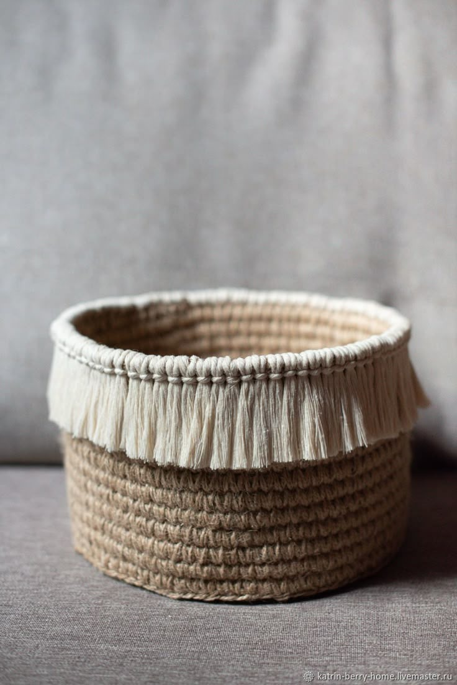
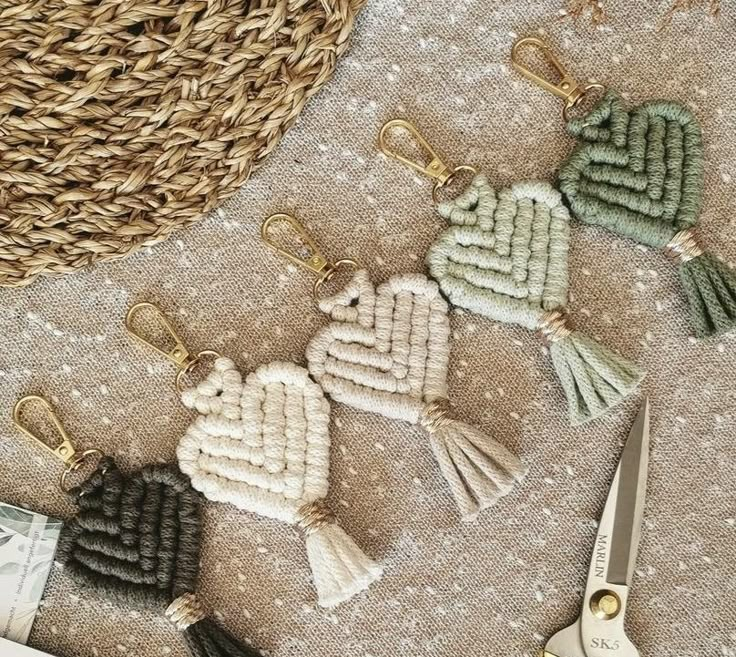
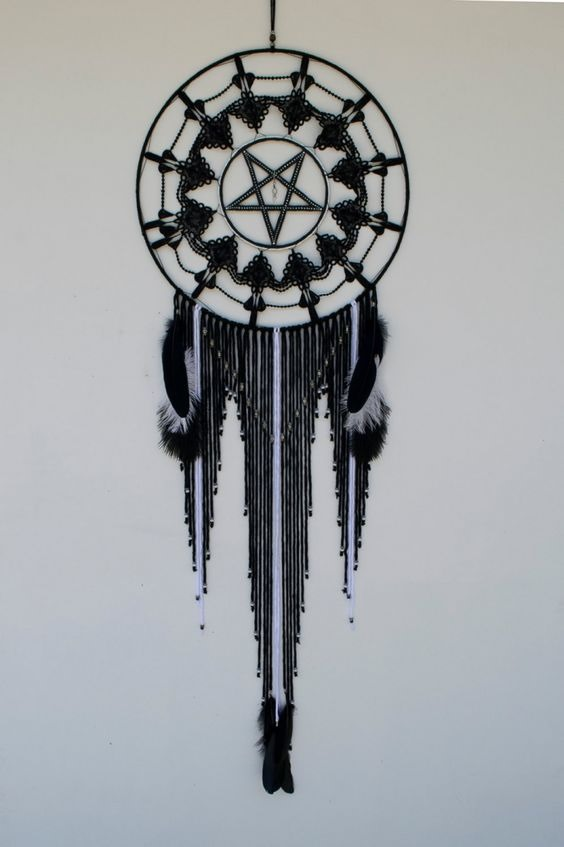

Malzemeler:
• Jüt ipi
• Sıcak silikon tabancası
• Çeşitli boyutlarda plastik veya karton taban (sepetin alt kısmı için)
• Makas
Adımlar:
1- Plastik veya karton tabanı alıp, etrafını jüt ipi ile sarmaya başlayın.
2- Sıcak silikon tabancası ile ipi tabanın etrafına yapıştırarak sarın. Her katmanı dikkatlice üst üste ekleyin.
3- Sepetin yüksekliğini arttırmak için ipi döndürerek yukarı doğru sarın.
4- Sepeti tamamladıktan sonra, ağzını ip ile bağlayıp, dilerseniz minik dekoratif bir kurdele veya boncukla süsleyebilirsiniz.

Malzemeler:
• Makrome ipi (yaklaşık 1 metre)
• Anahtarlık halkası
• Makas
• Sıcak silikon (isteğe bağlı, sabitlemek için)
Adımlar:
1- 1 metre kadar makrome ipi kesin.
2- Kalp Şeklini Oluşturun:
2.1- İpi "V" şeklinde tutarak iki ucunu birleştirin.
2.2- İpin uçlarını aşağıya doğru kıvırarak kalbin alt kısmını yuvarlayın.
3- Kalbin üst kısmındaki ipin uçlarını bağlayarak düğüm atın.
4- İpi anahtarlık halkasına bağlayın.
5- Kalbi boncuk veya dantel ile süsleyebilirsiniz.
6- Fazla ipleri kesip düzgünleştirin.

Malzemeler:
• Metal halkalar (ya da ahşap çubuklar)
• Makrome ipi veya ince ip
• Boncuklar (isteğe bağlı)
• Tüyler (isteğe bağlı)
• Makas
• Yapıştırıcı (isteğe bağlı)
Adımlar:
1- İpi keserek başlamak için yaklaşık 1-2 metre uzunluğunda bir ip parçası hazırlayın.
2- Metal halkayı alın ve ipi etrafına sararak, başlangıç noktasında bir düğüm atın. İpi sıkıca sararak halkayı tamamen kaplayın.
3- İç İpi Çekerek Ağ Kurun:
3.1- Halkayı çapraz olarak dört veya beş eşit bölüme ayırın.
3.2- Halkanın etrafına, ipinizi çapraz şekilde sararak ağ dokusu oluşturun. Her bir ipi birbirine bağlayarak bir ağ örün (örneğin, altıncı bir noktada daire şeklinde devam edin). İpi her düğümde sıkılaştırarak bir ağ görünümü elde edin.
4- Ağ Ortasına Bağlantı Ekleyin: Ağın ortasına, sabitlemek için bir düğüm veya bağ yapabilirsiniz. Bu, rüya avının "yakalayıcı" kısmı olacak. Dilerseniz ağın içine küçük boncuklar veya taşlar ekleyebilirsiniz.
5- Dekoratif Düğümler ve Tüyler: Rüya avınızın alt kısmına dekoratif düğümler yaparak veya ipleri serbest bırakarak uzun sarkan ipler oluşturabilirsiniz. Tüyleri bu iplerin uçlarına bağlayarak, klasik rüya avı görünümünü elde edebilirsiniz.
6- İpi düzgün bir şekilde kesin ve rüya avını asmak için bir ip ekleyin.